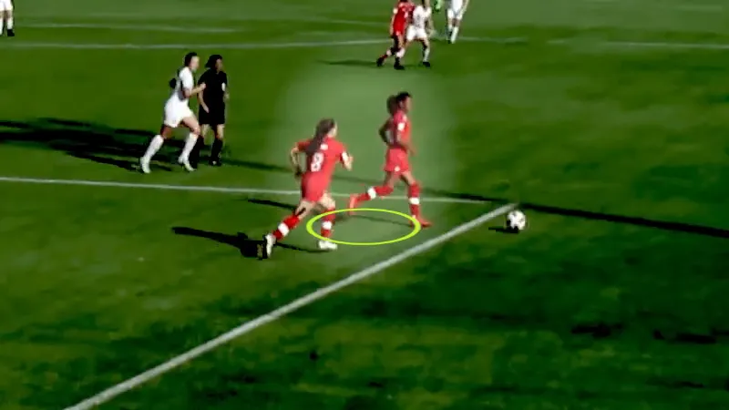

Instant replay and a spotlight on the scorer: making an amateur stream look like television
· Kadar

Television taught everyone what a goal looks like: the goal, then the goal again, with the scorer's name under it. An amateur stream usually has only the first part, and the viewer who looked away for a second has missed it for good. A phone can now do the second part too.
The replay, while the match goes on
When you add a goal to the score or tap Highlight, Kadar marks the moment. You open the replay and first watch it in a preview that only you can see. If it is worth showing, you send it to the stream: it plays in a window in the corner while the live picture continues behind it, so nobody misses the restart.

A caption says who it was
Under the replay window goes a caption: shirt number, name, club and minute. If the line-ups are in the app, you pick the player from the list. It takes two taps, and it is what the scorer's family will take a screenshot of.
A light on one player
In the preview you tap a player. The phone finds that player in the picture and follows them through the clip; the rest of the picture dims and a ring marks their feet. The tapped frame stands still for a second, so you see who was picked, and you can tap again to correct it.
What it does not do
It is fair to say where the limits are.
- The spotlight follows a player, not the ball.
- It follows the one player you tap, in that one clip. It does not analyse the match and it produces no tactics or statistics.
- In a crowded penalty area the phone can lose the player or jump to another one. A shot from a higher position helps.
- The feature is new, and it has been tried on a phone only briefly.
After the match, the same tools make the clip
In the clip studio you open a highlight, tap the player, fill in the caption and export the video. The light, the ring and the caption are written into the clip, ready for the club's pages.

Watching a replay on your own phone is free. Showing it on the stream, the caption, the spotlight and the clip studio are part of PRO, and everything in PRO is free until 28 February 2027.